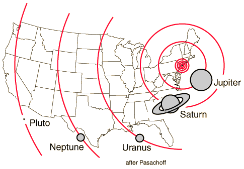

Relative Planet Sizes

In Contemporary Astronomy, Jay Pasachoff makes an interesting scale of the planetary orbits to a United States map. Some of the comparisons in the scale are:
- Sun: a ball of hot gas just over a kilometer in size in the center of New York
- Mercury: a 4 meter diameter ball at mid Long Island
- Venus: a 10 meter diameter ball one and a half times further
- Earth: Earth slightly bigger and passing over Trenton, New Jersey
- Mars: Mars about 5 meters in diameter just past Philadelphia
- Jupiter: About 100 meters in diameter at the Ohio line
- Saturn: A little smaller than Jupiter without its rings, past Cincinnati
- Uranus: About 30 meters across at the distance of Topeka
- Neptune: About 30 meters across at Santa Fe
- Pluto: About Los Angeles
|
Index
Solar System Illustration
Solar System Concepts
Reference
Pasachoff |